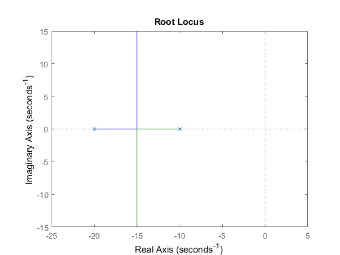
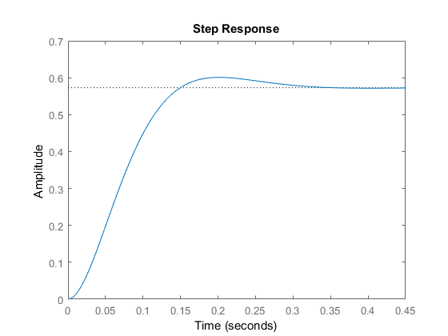
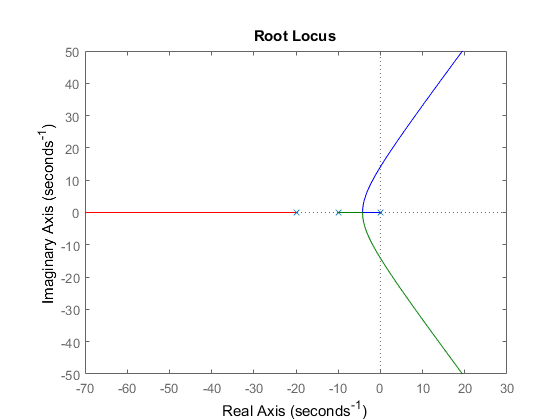
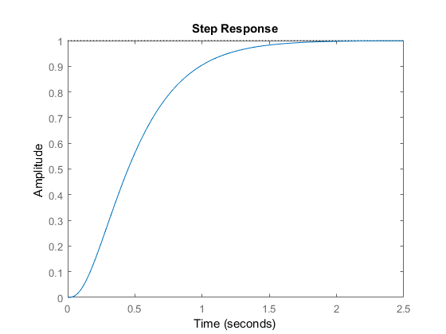
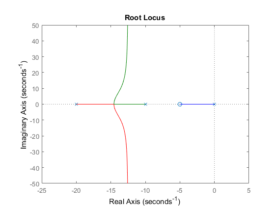
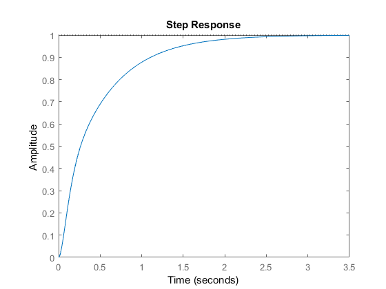
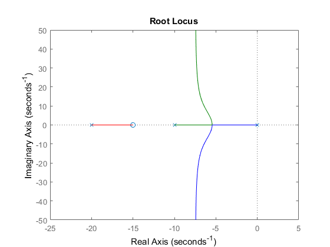
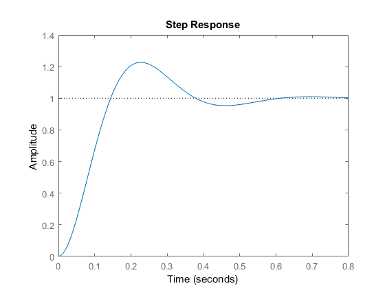
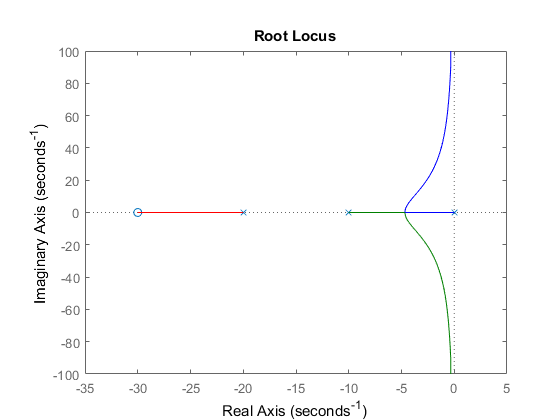
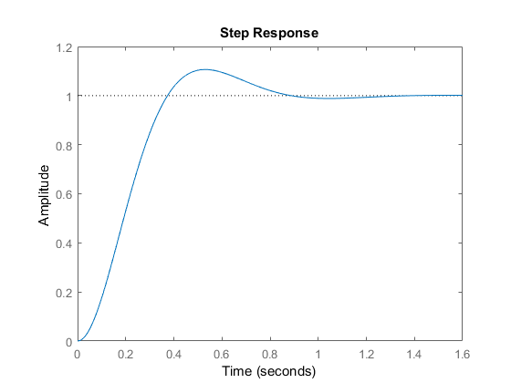

Contents
ECE414 Josh Andrews Homework #4
2/12/2018
clear all; clc;
Question 1: Proportional Control
The best value of K to minimize settling time while keeping %OS < 5 is 6.71, found by trying various values of K
k = 6.71;
s = tf('s');
H = (40*k)/((s+10)*(s+20));
T = feedback(ss(H),1);
Data = rlocusdata(H);
figure(1);
rlocus(H)
figure(2);
step(T)
  Question 2: Integral Control
The best value of K to minimize settling time while keeping %OS < 5 is 9.5, found by trying various values of K
k=9.5; H = (40*k)/(s*(s+10)*(s+20)); T = feedback(ss(H),1); b = rlocusdata(H); figure(3); rlocus(H) figure(4); step(T) 
Question 3: PI control, Z = 5
The best value of K to minimize settling time while keeping %OS < 5 is 2.2, found by trying various values of K
k=2.2; H = ((40*k)*(s+5))/(s*(s+10)*(s+20)); T = feedback(ss(H),1); b = rlocusdata(H); figure(5); rlocus(H) figure(6); step(T) 
Question 4: PI control, Z = 15
The best value of K to minimize settling time while keeping %OS < 5 is 6.25, found by trying various values of K
k=6.25; H = ((40*k)*(s+15))/(s*(s+10)*(s+20)); T = feedback(ss(H),1); b = rlocusdata(H); figure(7); rlocus(H) figure(8); step(T) 
Question 5: PI control, Z = 30
The best value of K to minimize settling time while keeping %OS < 5 is 1, found by trying various values of K
k=1; H = ((40*k)*(s+30))/(s*(s+10)*(s+20)); T = feedback(ss(H),1); b = rlocusdata(H); figure(9); rlocus(H) figure(10); step(T) 
Which is Best
The best system is hard to define as system applications vary. I would choose would be the PI controller with Z = 15. While the system has a larger %OS than others, it has one of the fastest rise times and settling times